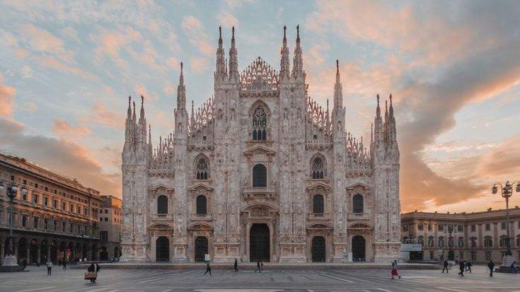
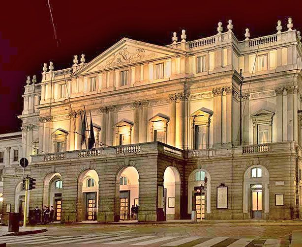

Навигация по странице
О городе | Достопримечательности | Таблица
О городе
Милан — крупный город на севере Италии. Он является одним из важнейших экономических и культурных центров страны.

Достопримечательности
- Миланский собор
- Галерея Виктора Эммануила II
- Замок Сфорца
- Театр Ла Скала
Интересные места Милана
| Место | Изображение | Описание | Ссылка |
|---|---|---|---|
| Миланский собор |
 |
Один из самых известных готических соборов Европы. | Официальный сайт |
| Ла Скала |
 |
Знаменитый оперный театр Милана. | Официальный сайт |